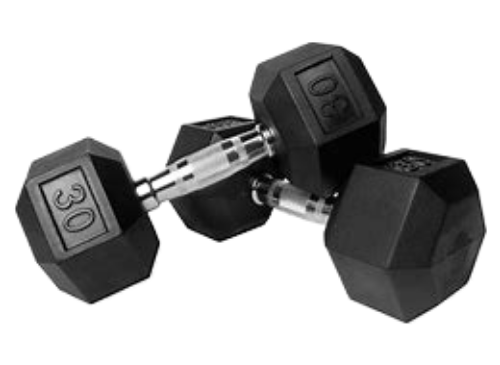
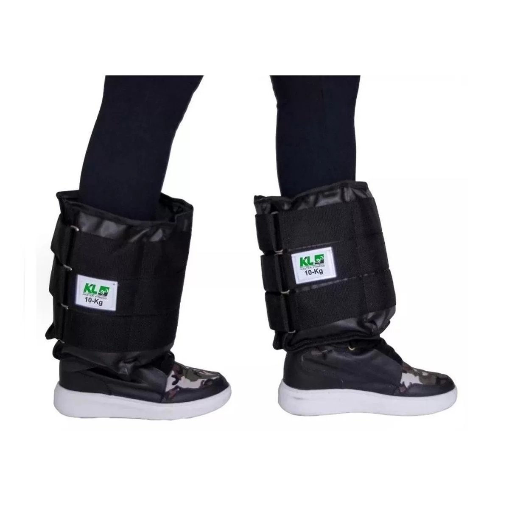
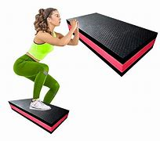
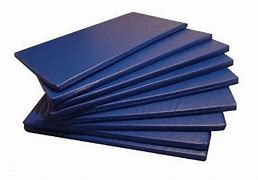
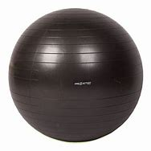

1. Halteres

Os halteres são acessórios usados para diferentes tipos de exercícios – chamados de peso livre. A maioria dos atletas usa para trabalhar os grupos musculares superiores, mas também servem para potencializar os resultados de exercícios de agachamento, abdominal, entre outros.
São usados em pares e encontrados em kits que vão de 1 kg até mais de 30 kg. Para mantê-los organizados e para facilidade de manuseio, o ideal é investir também em uma estante para halteres.
2. Caneleiras

Como o nome já diz, é um acessório para as canelas, como uma cinta com peso. Ao contrário dos halteres, são prioritariamente usadas para treinos de grupos musculares inferiores.
Também são encontradas em kits, com pares de caneleiras de 1 kg até 10 kg, normalmente.
3. Bancos de Musculação

Outro equipamento super versátil é o banco de musculação – e a dica aqui vai para a escolha das opções com angulação ajustável. Dessa forma, os alunos podem realizar uma série de exercícios usando apenas um banco e suas diferentes inclinações.
4. Step

É um dos equipamentos básicos para montar uma academia, parecido a um degrau. Além de ser usado para as aulas coletivas que levam o mesmo nome do acessório, também podem ajudar a trazer mais complexidade para diversos exercícios – como panturrilha, flexão de braços, agachamento sumô, entre outros.
O step também pode ser uma solução para que os alunos com estatura mais baixa realizem os movimentos corretos em determinados equipamentos – como o de remada alta, evitando lesões.
5. Colchonetes

São acessórios essenciais, principalmente para exercícios de alongamento, mobilidade e abdominal, além de apoio para outros exercícios feitos no solo.
Não são equipamentos de investimento alto. Por isso, é essencial que uma academia tenha uma quantidade suficiente para atender aos alunos. E como é um acessório que fica 100% apoiado no chão, é importante disponibilizar materiais para que os alunos possam fazer a higienização antes ou após o uso.
6. Bolas

Wall Ball, Bola de Pilates, FitBall, Kettlebell e por aí vai… as bolas são equipamentos disponíveis nos mais diversos pesos, tamanhos, formatos e para finalidades diferentes.
Como normalmente são acessórios que exigem um espaço maior para armazenamento, vale a pena entender o perfil do público da sua academia para planejar o investimento.
7. Prancha Abdominal

Também conhecida por banco declinado, é um acessório usado para aumentar a complexidade de exercícios abdominais. E, exatamente como nos bancos, a dica é investir em um aparelho com regulagem, para os alunos poderem usá-lo em diferentes inclinações.
8. Bicicleta Ergométrica

É o simulador de pedaladas indoor, muito comum em academias – principalmente as que oferecem aulas de spinning. Normalmente são usadas para exercícios aeróbicos e que trabalham os músculos inferiores, mas também fazem parte das atividades físicas de pessoas em processo de recuperação de lesões ortopédicas, por exemplo.
Podem ser encontradas em diversos modelos, tamanhos e tecnologias. Para escolher o modelo e quantidade ideal para a sua empresa, é importante considerar o espaço disponível, volume e perfil de alunos.
9. Esteira Ergométrica

As dicas e sugestões para investimento nesse equipamento são basicamente as mesmas em relação às Bicicletas Ergométricas. A diferença é que a esteira simula caminhadas e corridas, com diferentes velocidades e inclinações.